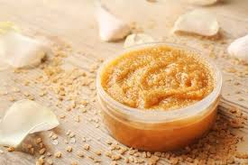
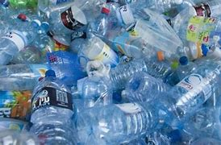

Microplásticos primários: São pequenos fragmentos de plástico fabricados em tamanho reduzido
para diversos fins comerciais
principalçmente em produtos cosméticos e de higiene pessoal,
como esfoliantes, sabonetes, pasta de dente, batons e cremes, que contem microesferas
de plástico em sua formulação. Além disso esses microplásticos podem ser encontrados em tecidos
e fibras sintéticas.
|
 |
|  |
Microplásticos secundários: São fragmentos de plástico que surgem
da deterioração de itens plásticos maiores, como garrafas, sacolas ou embalagens.
A exposição desses objetos à luz solar, calor e forças mecânicas, como a ação da água
ou movimento do solo, pode leva-los a se desintegrar
em fragmentos menores conhecidos como microplásticos secundários.
|